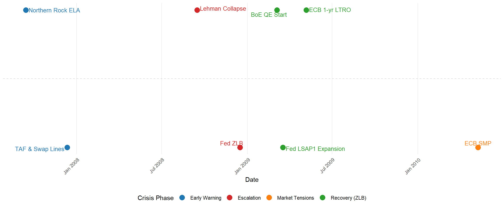
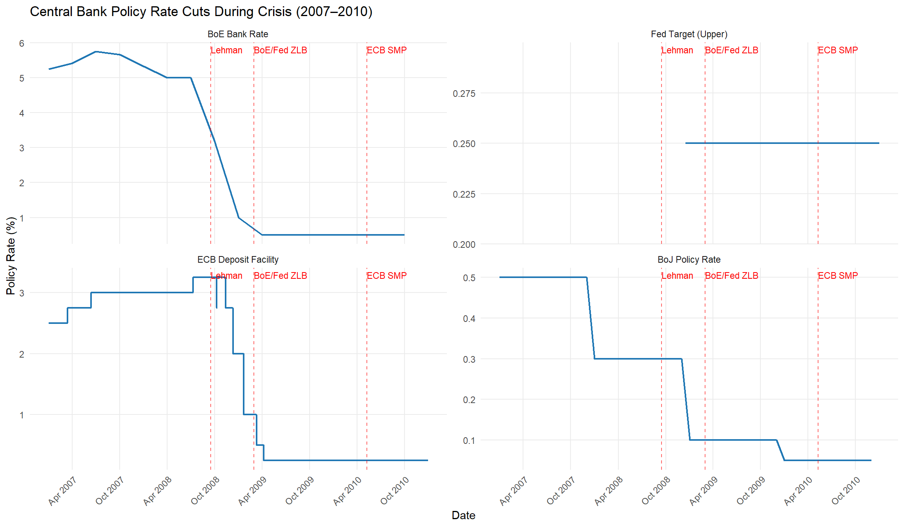
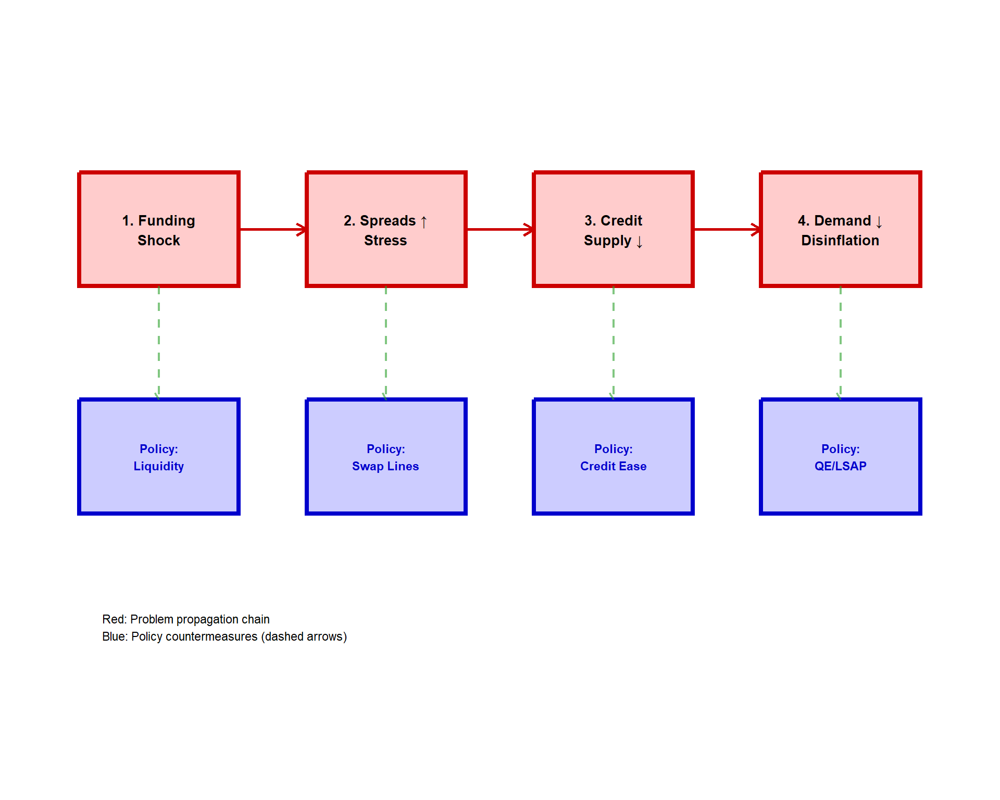
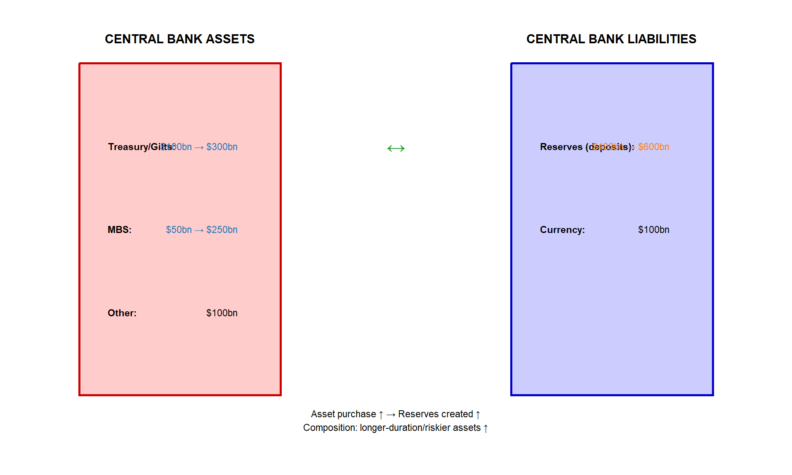
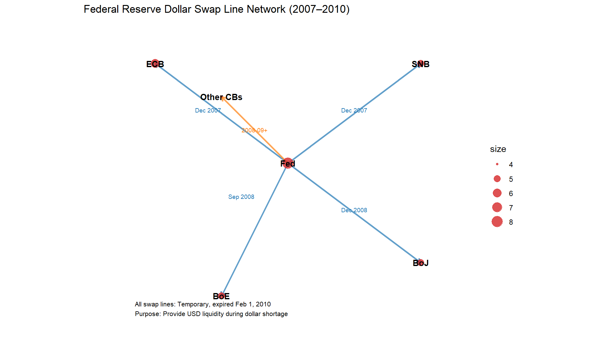
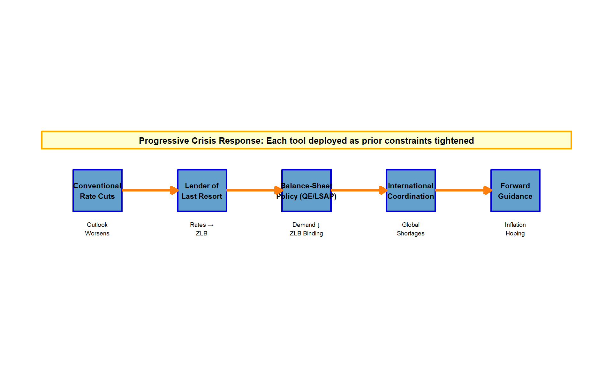

Topic 8: Monetary Policy Post-GFC Crisis 2007–2010
How Central Banks Restored Transmission During the Financial Crisis
1 Introduction: Why the Post-GFC Period Mattered for Monetary Economics
The global financial crisis that intensified from August 2007 and culminated in September 2008 fundamentally changed how central banks practiced monetary policy. In advanced economies, central banks moved rapidly from “normal-times” interest-rate stabilization to crisis management in which monetary policy and financial stability became inseparable—because disruptions to money markets, bank funding, and securitization impaired the monetary transmission mechanism itself.
This chapter examines how central banks used conventional and unconventional tools to restore transmission and stabilize inflation and output between 2007 and 2010, and what that episode teaches about modern policy frameworks. Unlike pre-crisis textbook treatments focused purely on policy rates and inflation targets, the post-GFC period revealed that central banks must also maintain the operational capacity to provide liquidity when markets fail, manage international spillovers, and coordinate across jurisdictions. The toolkit expanded from conventional rate policy to include balance-sheet operations, emergency facilities, and global coordination—transforming what “monetary policy” means in practice.
2 The Crisis Chronology and the Breakdown of Transmission
A useful organizing principle is that monetary policy after 2007 was as much about restoring the plumbing of the financial system as about setting the policy stance. The chronology below highlights why.
2.1 Early Warning Phase (2007)
Strains first appeared in wholesale funding markets and securitization, producing elevated interbank spreads and visible “liquidity hoarding.” Central banks began with liquidity operations and cooperation.
Key event: On December 12, 2007, the Federal Reserve, Bank of Canada, Bank of England, ECB, and Swiss National Bank announced a coordinated package introducing the Fed’s Term Auction Facility (TAF) and swap lines with the ECB and SNB to address dollar funding pressures in money markets.
UK case study: Northern Rock and emergency liquidity assistance (ELA). On September 14, 2007, HM Treasury authorized the Bank of England to provide a liquidity support facility to Northern Rock plc against appropriate collateral and at a premium. This episode illustrates why “lender of last resort” functions still matter in modern banking, how information disclosure and confidence can be as important as collateral policy, and how crisis policy blurs the boundary between monetary policy operations and financial stability mandates.
2.2 Escalation Phase (2008)
The crisis became systemic after the collapse of major intermediaries and the near-failure of others. The core macro point is that bank capital and liquidity problems feed back to the real economy through a credit supply contraction, so monetary policy needed to address both the interest-rate channel and the functioning of credit markets.
2.3 2009–2010: From Acute Panic to Extended Repair
By 2009, the policy challenge shifted from preventing collapse to supporting recovery while inflation risk looked subdued. In Europe, the crisis evolved into sovereign-bond market dysfunction. In May 2010, the ECB introduced the Securities Markets Programme (SMP) to address severe tensions that were “hampering the monetary policy transmission mechanism,” explicitly stating the measures would not change the stance of policy (they were intended to restore transmission).
3 Conventional Easing to the Effective Lower Bound
Between 2007 and 2009, central banks cut policy rates rapidly as the outlook deteriorated and inflation pressures fell. This section contrasts the key approaches.
3.1 The UK: Bank Rate to 0.5% and the Shift to QE
The Bank of England reduced Bank Rate in steps to 0.5% on March 5, 2009 and simultaneously launched large-scale asset purchases financed by reserve creation. The MPC minutes record a unanimous decision to: 1. Cut Bank Rate to 0.5% 2. Finance £75 billion of asset purchases by creating central bank reserves, with scale and timing reviewed at each MPC meeting
This is a key teaching point: once Bank Rate approached its lower effective bound, the MPC explicitly treated asset purchases as part of monetary policy implementation—still aimed at meeting the CPI inflation target in the medium term.
3.2 The United States: Federal Funds Rate at the ZLB and “Extended Period” Language
In the US, in December 2008 the FOMC set a target range of 0 to 1/4 percent for the federal funds rate. The December 2008 minutes explain the decision to communicate explicitly that the Committee wanted funds to trade at very low rates and to indicate that weak conditions were likely to warrant exceptionally low levels for some time.
By March 2009, the FOMC’s communication included that rates were likely to remain exceptionally low “for an extended period,” alongside balance-sheet expansion decisions.
3.3 The Euro Area: Rapid Rate Cuts Plus “Full Allotment” Liquidity
In the euro area, the ECB cut the main refinancing operation (MRO) rate to 1.00% in May 2009 and simultaneously expanded liquidity provision tools. But the key distinction relative to the Fed/BoE is operational: from October 2008, the ECB shifted MROs to fixed rate full allotment—a commitment to satisfy banks’ demand for central bank liquidity at the policy rate—explicitly to stabilize fractured money markets.
3.4 Japan as Precedent: A Long ZLB Environment
Japan’s experience provided a real-world laboratory in advance of 2008. The Bank of Japan’s earlier Zero Interest Rate Policy (1999–2000) and later unconventional measures gave policymakers a playbook. Institutionally, it explicitly described early use of a “policy duration effect”—forward-guidance-type logic that later became standard post-2008.

[FIGURE 2 HERE] Policy rates (BoE/Fed/ECB/BoJ), 2007–2010 with event markers
Note
Figure 2 Caption: Line chart of policy rates with vertical markers at Sept 2008, Mar 2009, May/Jun 2009, May 2010. Include BoE Bank Rate, Fed target range midpoint, ECB MRO (or deposit facility rate), and BoJ policy rate. Highlight the coordinated easing and convergence toward zero/near-zero levels by 2009.
4 Liquidity Provision and Lender-of-Last-Resort Tools
A central post-2007 insight is that “monetary policy” includes the operational capacity to provide liquidity when markets fail, because the policy rate alone cannot transmit if funding markets, collateral markets, or dealer systems stop functioning.
4.1 UK Liquidity Insurance: Special Liquidity Scheme and Asset Purchase Facility
The Bank of England’s Special Liquidity Scheme (SLS) (April 2008) was designed to relieve banks’ overhang of illiquid assets by allowing temporary swaps into Treasury bills, thereby upgrading liquidity. The official BoE press release emphasizes that closed markets left banks holding assets they could not sell or pledge, making them reluctant to lend.
The Asset Purchase Facility (APF) was established in early 2009 initially to improve liquidity and corporate credit flows via purchases of high-quality private sector assets; it was authorized by HM Treasury and later expanded to support monetary policy.
4.2 US Liquidity Facilities: TAF, TSLF, PDCF, CPFF, TALF
The Fed’s crisis approach included multiple facilities targeted at different segments of the financial system:
- TAF (Term Auction Facility): term funding auctioned to depository institutions against a wide range of collateral, introduced in December 2007 as part of coordinated central bank measures.
- Swap lines: provided international dollar liquidity through reciprocal arrangements; Fed documentation notes these temporary arrangements expired on February 1, 2010.
- TSLF (Term Securities Lending Facility): announced in March 2008 to lend Treasury securities to primary dealers against other collateral, supporting dealer financing and repo-market functioning.
- PDCF (Primary Dealer Credit Facility): launched March 2008 as an overnight loan facility to primary dealers, effectively creating a discount-window-like backstop for dealers; it closed February 1, 2010 with all loans repaid.
- CPFF (Commercial Paper Funding Facility): announced October 7, 2008; started purchases October 27, 2008; closed February 1, 2010; designed to backstop term commercial paper markets.
- TALF (Term Asset-Backed Securities Loan Facility): expanded February 2009; aimed to support consumer and small-business credit by lending against AAA asset-backed securities.
These instruments are pedagogically valuable because they show how monetary authorities attempted to address specific market dysfunctions—not just aggregate demand.
4.3 ECB Liquidity Provision: Fixed Rate Full Allotment, Expanded Collateral, and Longer-Term Operations
In October 2008, the ECB (i) adopted fixed rate full allotment for main refinancing operations and (ii) narrowed the standing facility corridor. Shortly after, it expanded eligible collateral and enhanced longer-term refinancing operations. In May 2009, the ECB decided to conduct one-year LTROs at fixed rate full allotment, illustrating how the ECB relied heavily on bank-based transmission and liquidity provision rather than outright sovereign QE in 2009.
| Facility | BoE_Fed_ECB | Market Target | Dates Operational | Purpose |
|---|---|---|---|---|
| Special Liquidity Scheme (SLS) | BoE | Illiquid asset liquidity | Apr 2008–Jan 2012 | Temp. swap of illiquid assets to Treasury bills |
| Term Auction Facility (TAF) | Fed | Interbank funding | Dec 2007–Mar 2010 | Auctioned term funding to depository institutions |
| Term Securities Lending (TSLF) | Fed | Dealer/repo funding | Mar 2008–Feb 2010 | Loan of Treasury securities to primary dealers |
| Primary Dealer Credit (PDCF) | Fed | Dealer overnight funding | Mar 2008–Feb 2010 | Overnight backstop for primary dealers |
| Commercial Paper Funding (CPFF) | Fed | Commercial paper mkt | Oct 2008–Feb 2010 | Purchase of 3-month CP to revive market |
| Term Asset-Backed Securities Loan (TALF) | Fed | ABS/consumer credit | Feb 2009–Jun 2010 | Loans against AAA-rated ABS |
| Fixed Rate Full Allotment | ECB | Interbank funding | Oct 2008–2012+ | Supply all demanded reserves at policy rate |
| Covered Bond Purchase (CBPP) | ECB | Bank funding (bonds) | Jul 2009–Jun 2010 | €60bn purchases of covered bonds |
| Securities Market Programme (SMP) | ECB | Sovereign bond market | May 2010–Sep 2011 | Support market depth, restore transmission |
[TABLE 1 HERE] Crisis-era instruments by market friction (2007–2010)
Note
Table 1 Caption: Map each facility to the market it targeted (interbank funding, repo/dealer funding, commercial paper, ABS markets, international dollar funding), and list the central bank and dates of operation.
Note
Table 1 Caption: Map each facility to the market it targeted (interbank funding, repo/dealer funding, commercial paper, ABS markets, international dollar funding), and list the central bank and dates of operation.

[FIGURE 3 HERE] “Plumbing” diagram of crisis transmission breakdown and policy tools
Note
Figure 3 Caption: Flowchart showing: funding liquidity shock → interbank spreads/dealer stress → credit supply contraction → demand contraction → disinflation risk. Overlay policy tools: liquidity facilities, swap lines, QE/LSAP, forward guidance.
5 Balance-Sheet Policies and Unconventional Monetary Policy
Post-2008, central banks used their balance sheets as policy tools. A key analytical improvement is to distinguish: 1. Liquidity provision (steering money markets, bank funding) 2. Credit easing/market functioning operations (targeted backstops for specific dysfunctional markets) 3. Large-scale asset purchases (QE/LSAPs) (buying duration risk to compress longer-term yields)
5.1 Bank of England: QE via Gilt Purchases Financed by Reserves
The UK’s large-scale purchases began in March 2009 and were expanded repeatedly: - May 2009: increased to £125 billion - August 2009: increased to £175 billion - November 2009: increased to £200 billion
Each expansion was financed by central bank reserves (not by borrowing or open-market operations).
The canonical BoE research estimate from this “first wave” is Joyce et al. (2010), which explicitly states that by February 2010 the MPC had made £200 billion of purchases (mostly gilts) and estimates QE may have depressed gilt yields by about 100 basis points. The largest impact occurred via a portfolio rebalancing channel, though the authors acknowledge uncertainty about wider asset-price effects.
5.2 Federal Reserve: LSAP1 and the Combination of Purchases and Credit Policies
The Fed’s balance-sheet timeline records the core LSAP1 announcements: - November 25, 2008: intention to purchase up to $100 billion agency debt and up to $500 billion agency MBS - March 18, 2009: expansion to $1.25 trillion MBS, $200 billion agency debt, and $300 billion longer-term Treasuries
Research from the NY Federal Reserve finds LSAPs produced economically meaningful reductions in longer-term interest rates primarily through lower risk/term premia rather than only through expectations of future short rates.
5.3 ECB: Bank-Based Nonstandard Measures, CBPP, and (by 2010) SMP
The ECB’s 2009 nonstandard policy relied heavily on full-allotment liquidity and LTROs. It also introduced the Covered Bond Purchase Programme (CBPP) in May 2009, with purchases starting in July 2009 aimed at supporting a key bank funding segment. The program reached its intended nominal amount of €60 billion by June 30, 2010.
By May 2010, sovereign bond market dysfunction led the ECB to launch the SMP to support market depth and restore transmission while stating it would not alter the monetary-policy stance.
5.4 A Compact “Channels” Summary for Undergraduates
A useful bridge between theory and practice is to show that unconventional policies work through recognizable transmission channels:
- Portfolio balance: central bank purchases reduce net supply of duration/risk to private portfolios → lower term premia → lower longer-term yields
- Signaling/expectations management: communication that rates will stay low “for an extended period” affects expected future short rates and risk premia
- Market functioning: targeted backstops reduce fire-sale spirals, improve liquidity, and reopen credit markets
- International liquidity: swap lines relieve currency-specific shortages and stabilize cross-border funding

[FIGURE 4 HERE] Central bank balance sheet mechanics (stylized T-accounts)
Note
Figure 4 Caption: Asset purchase financed by reserves: central bank assets ↑ (gilts/MBS), liabilities ↑ (reserves). Emphasize that the purchase changes the composition of assets held by the private sector, and that reserves are liabilities of the central bank.
| Policy Type | Instrument Mechanics | Targeted Market Failure | Transmission Channels |
|---|---|---|---|
| Liquidity Provision | Lend reserves at policy rate (unlimited supply) | Interbank funding freeze, hoarding | Lower interbank spreads, restore money market function |
| Credit Easing/Facilities | Backstop specific markets (CP, ABS, dealer repo) | Fire sales in specific segments | Remove dysfunction, restore pricing, reduce credit rationing |
| QE/LSAP | Purchase long-duration/risky assets with reserves | Term premium elevation, portfolio imbalance | Lower longer rates via portfolio rebalancing, expectations effects |
| Forward Guidance | Communicate future policy path | Uncertainty about near-term/far-term rates | Anchor expectations, shape term structure, signal commitment |
[TABLE 2 HERE] Unconventional-policy classification matrix
Note
Table 2 Caption: Rows: liquidity provision, credit easing, QE/LSAP, forward guidance Columns: instrument mechanics, targeted market failure, main transmission channels, risks (moral hazard, fiscal exposure, exit complexity)
6 International Spillovers and Central Bank Coordination
The GFC highlighted international funding spillovers and the limits of purely domestic policy tools. The crisis blurred the distinction between monetary and financial stability and revived practical central bank cooperation. The Fed’s documentation notes that the FOMC authorized swap lines with multiple foreign central banks over time and that these temporary arrangements expired on February 1, 2010.
From the ECB side, October 2008 press releases describe expanding collateral and enhancing liquidity provision, including the offer of US dollar liquidity through FX swaps—demonstrating that euro-area monetary operations became explicitly multi-currency during crisis management.
A useful empirical bridge for students is that BIS reporting at the time described dollar funding shortages in global banking and highlighted the interplay between central bank measures and interbank spread declines.

[FIGURE 5 HERE] Swap-line network diagram (2007–2010)
Note
Figure 5 Caption: Simple network diagram showing Fed dollar swap lines with ECB/SNB (Dec 2007) and broader network as crisis intensified; annotate expiry Feb 2010.
7 Evaluation, Controversies, and the Post-2010 Legacy
A post-GFC chapter must teach not only what central banks did, but how economists and institutions evaluated these actions.
7.1 Was Monetary Policy Effective During the Crisis?
Frederic Mishkin (2009) argues the view that monetary policy is ineffective during crises is wrong and risks policy inaction. He supports a “risk-management approach” where aggressive easing can reduce adverse feedback loops between financial distress and the macroeconomy. Mishkin (2011) frames the crisis as changing the perceived boundaries of monetary policy strategy, including the role of financial stability.
7.2 How Large Were LSAP/QE Effects on Yields?
Institutional research is careful and typically focuses on financial variables (yields, spreads) more than precise GDP/inflation effects:
- BoE estimates: QE reduced gilt yields by about 100 basis points, with the portfolio balance channel important. Broader effects on output and inflation remain uncertain.
- NY Fed evidence: LSAPs reduced longer-term rates across many securities mainly via term/risk premia reductions.
A useful approach for 3rd-year students is to treat these as partial-equilibrium financial effects that plausibly feed into demand, rather than to claim a single definitive macro multiplier.
7.3 Rules, Discretion, Moral Hazard, and Legitimacy
The GFC revived classical lender-of-last-resort concerns about moral hazard and the “rules vs discretion” problem, now under modern conditions where (i) solvency is hard to assess in real time and (ii) the shadow banking system is large. The debate echoes time-consistency and credibility themes: crisis interventions can be welfare-improving ex post but create incentives for risk-taking ex ante. Primary sources emphasize the need to design facilities with collateral and pricing rules to mitigate moral hazard.
7.4 From 2010 Onward: How the Crisis “Rewrote Chapter 8”
Pre-crisis treatments of inflation control focused on policy rates, reserve supply, and (depending on the regime) money or exchange-rate targets. Post-2007, the toolkit expanded to include balance-sheet policies, market backstops, and international liquidity provision. The key legacy is that “inflation control” is now inseparable from the resilience of financial plumbing and the credibility of central bank frameworks under extreme stress.

[FIGURE 6 HERE] “Policy toolkit expansion” schematic
Note
Figure 6 Caption: Schematic ladder showing how central banks added instruments as constraints tightened: conventional rate policy → lender-of-last-resort → balance-sheet policy → coordination.
8 Summary and Key Terms
8.1 Summary
Between 2007 and 2010, central banks responded to a breakdown in monetary transmission by combining:
- Rapid conventional rate cuts to (or near) the effective lower bound
- Large-scale liquidity provision and emergency facilities to keep key markets functioning (interbank, repo/dealer funding, commercial paper, ABS)
- International swap-line networks to relieve global dollar shortages
- Asset purchases/QE/LSAPs to compress longer-term yields and support demand when rates were constrained
The episode permanently expanded what “monetary policy” means in practice: operational capacity, balance-sheet tools, and coordination are now part of the standard toolkit discussion, even if not used in normal times.
8.2 Key Terms
- Effective Lower Bound (ELB): practical lower bound on policy rates given institutional constraints
- Lender of Last Resort (LOLR): central bank liquidity support to solvent but illiquid institutions/markets, designed to prevent runs and fire sales
- Fixed Rate Full Allotment: central bank supplies demanded reserves/liquidity at a fixed policy rate (ECB, Oct 2008)
- Quantitative Easing (QE)/LSAP: large-scale asset purchase programs aimed at lowering longer-term yields and supporting spending
- Swap Lines: reciprocal currency arrangements to provide foreign-currency liquidity (notably dollars) to overseas markets
8.3 Review Questions
Explain why the policy rate alone could not restore normal transmission in late 2008. Use at least two examples of market dysfunction (e.g., commercial paper, dealer funding, interbank markets).
Compare the BoE’s SLS and QE programs: which balance-sheet problems did each target, and how did their mechanics differ?
Define “fixed rate full allotment” and explain why the ECB adopted it in October 2008.
Using BoE and NY Fed evidence, explain the portfolio balance channel of QE/LSAPs and how it differs from pure “signaling.”
What was the stated intended purpose of the ECB SMP in May 2010? Why did the ECB emphasize it would not change the stance of policy?
Discuss the trade-off between crisis intervention and moral hazard using one facility (PDCF, CPFF, or SLS) as your example.
9 References
Bank for International Settlements, Allen, W.A., & Moessner, R. (2010). Central bank co-operation and international liquidity in the financial crisis of 2008–9 (BIS Working Paper No. 310).
Bank for International Settlements, Borio, C., & Disyatat, P. (2009). Unconventional monetary policies: an appraisal (BIS Working Paper No. 292).
Bank of England. (2007). Liquidity support facility for Northern Rock plc (press release, 14 September 2007).
Bank of England. (2008). Special Liquidity Scheme (press release, 21 April 2008).
Bank of England. (2009). Asset Purchase Facility (press release, 29 January 2009).
Bank of England. (2009). Minutes of the Monetary Policy Committee Meeting held on 4 and 5 March 2009.
Bank of England. (2009). Bank Rate reduced to 0.5% and £75bn asset purchase programme announced (press release, 5 March 2009).
Bank of England. (2009). MPC May 2009: Asset Purchase Programme increased to £125bn (press release, 7 May 2009).
Bank of England. (2009). MPC August 2009: Asset Purchase Programme increased to £175bn (press release, 6 August 2009).
Bank of England. (2009). MPC November 2009: Asset Purchase Programme increased to £200bn (press release, 5 November 2009).
Bank of England. (2010). Joyce, M., Lasaosa, A., Stevens, I., & Tong, M. The financial market impact of quantitative easing (Working Paper No. 393).
European Central Bank. (2008). Changes in tender procedure and in the standing facilities corridor (press release, 8 October 2008).
European Central Bank. (2008). Measures to further expand the collateral framework and enhance the provision of liquidity (press release, 15 October 2008).
European Central Bank. (2009). Monetary policy decisions (press release, 7 May 2009).
European Central Bank. (2010). Covered bond purchase programme completed (press release, 30 June 2010).
European Central Bank. (2010). ECB decides on measures to address severe tensions in financial markets (press release, 10 May 2010; SMP).
Federal Reserve Board. (2007). Federal Reserve and other central banks announce measures designed to address elevated pressures in short-term funding markets (press release, 12 December 2007).
Federal Reserve Board. (2008). Board announces creation of the Commercial Paper Funding Facility (CPFF) (press release, 7 October 2008).
Federal Reserve Board. (2008). FOMC Minutes, December 15–16, 2008.
Federal Reserve Board. (2009). FOMC Minutes, March 17–18, 2009.
Mishkin, F.S. (2009). Is Monetary Policy Effective During Financial Crises? (NBER Working Paper No. 14678).
Mishkin, F.S. (2011). Monetary Policy Strategy: Lessons from the Crisis (NBER Working Paper No. 16755).